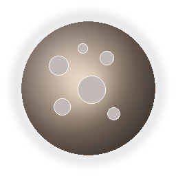

MATAHARI
TOPIK--DETIK
Pertanyaan akan muncul di sini.
TEPAT
+0
ANTARA · QUIZ NAVIGASI TATA SURYA
Satu tantangan berisi tepat 15 soal campuran dari lima tingkat kesulitan. Apa pun hasilnya, skor ronde langsung dikunci setelah soal ke-15 dan dibandingkan dengan best record kamu.



 3 SOALPEMULAPemanasan
3 SOALDASARMulai cepat
3 SOALMENENGAHFokus!
3 SOALSULITBerani?
3 SOALPEMULAPemanasan
3 SOALDASARMulai cepat
3 SOALMENENGAHFokus!
3 SOALSULITBerani?
 3 SOALAHLIPuncak
3 SOALAHLIPuncak
Masuk ke akun ANTARA supaya skor dan medali kamu ikut tersimpan.
MATAHARI
TOPIKMISI QUIZ SELESAI
Coba lagi sebentar.